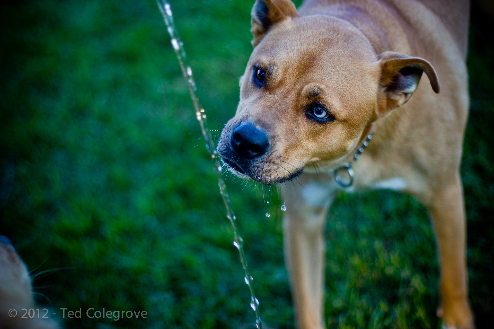
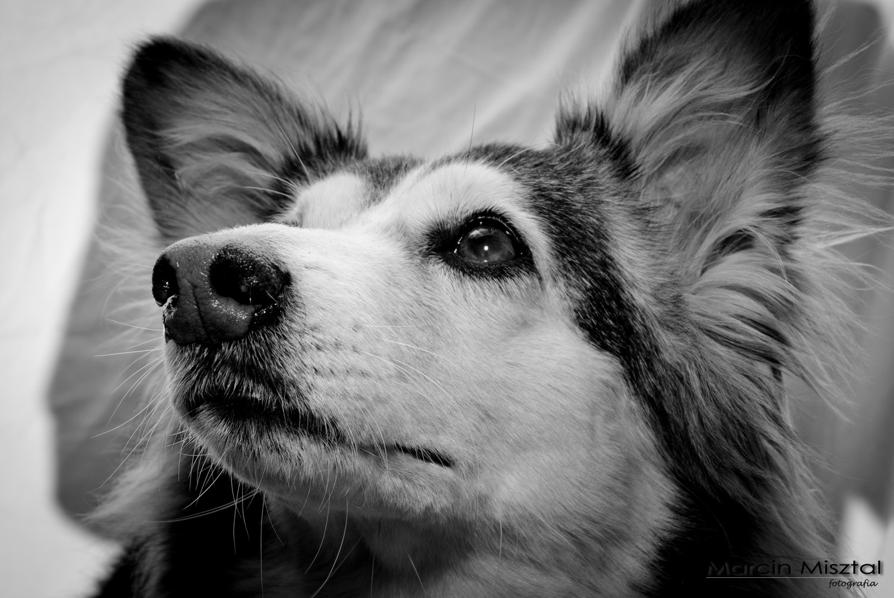

Dogs have been known as mans best friend ever since. They
were first domesticated. This came from a special bond dogs shared
with humans that made them the perfect companion to take on the
difficulty of life. The dogs role has shifted from hunting assistant
to emotional support animal in the last decade, but the basic rule
remains; dogs are there to make life better.

Dogs can help us avoid depression, avoid developing bad habits
and teach us responsibility. Another, less-known ability of dogs is
to identify evil and dishonesty and sound a warning cry to all in
the area: a bark.

The bark is the most recognized sound a dog can make. This
warning is often associated with a warning of danger. Thus we see that there
must be some malicious intent in almost every cat because it is one species
that dogs just do not seem to get along with. Other potential creatures dogs
despise are: demons, trolls, zombies, and men who don’t put the toilet seat down.
When we put cats into this list, we see that the list of things a dog does not like
closely matches a list of all things that are just the worst ever. This in turn
allows us to answer questions of the universe and existence without the negative
influence of feline antics.